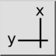
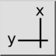

Menu: Wymiar > Łańcuchowy (X/Y)
Skrót: D, O
Polecenia: dimordinate | do
Pasek narzędziowy / ikona:
 

Menu: Wymiar > Łańcuchowy (X/Y)
Skrót: D, O
Polecenia: dimordinate | do
Opis:
Narzędzie to rysuje wymiar współrzędny. Wymiary współrzędnych wskazują na współrzędne X lub Y danej cechy na rysunku, w odniesieniu do punktu początkowego.
Procedura: